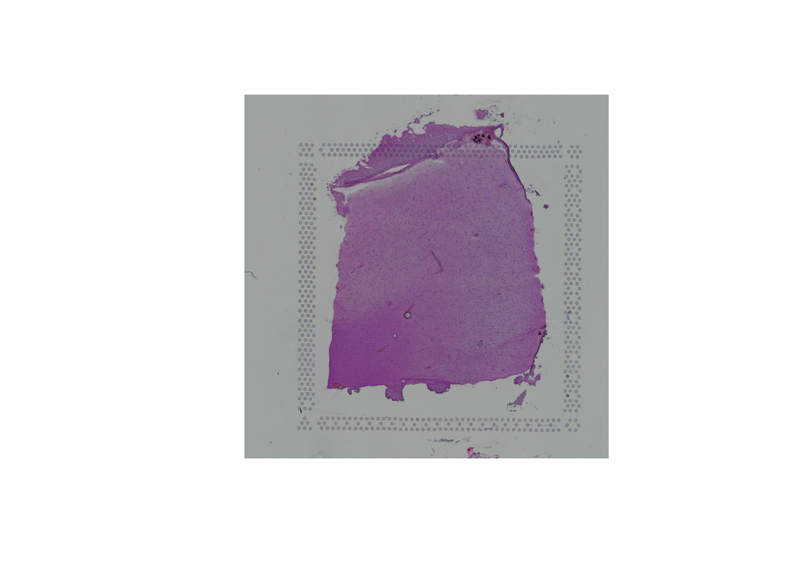
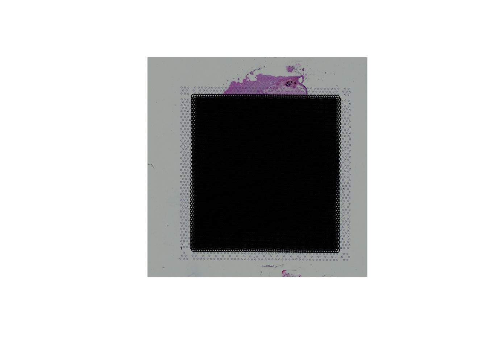
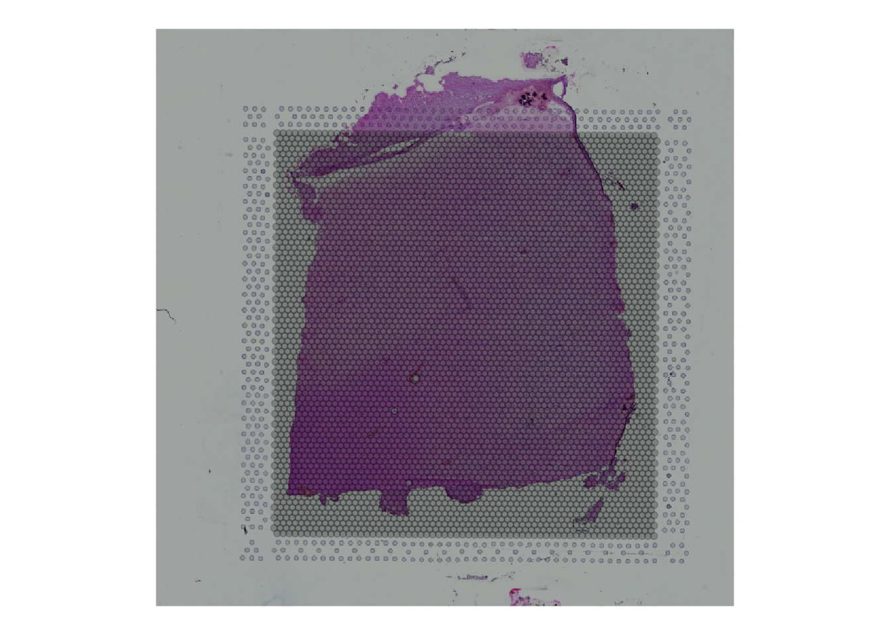
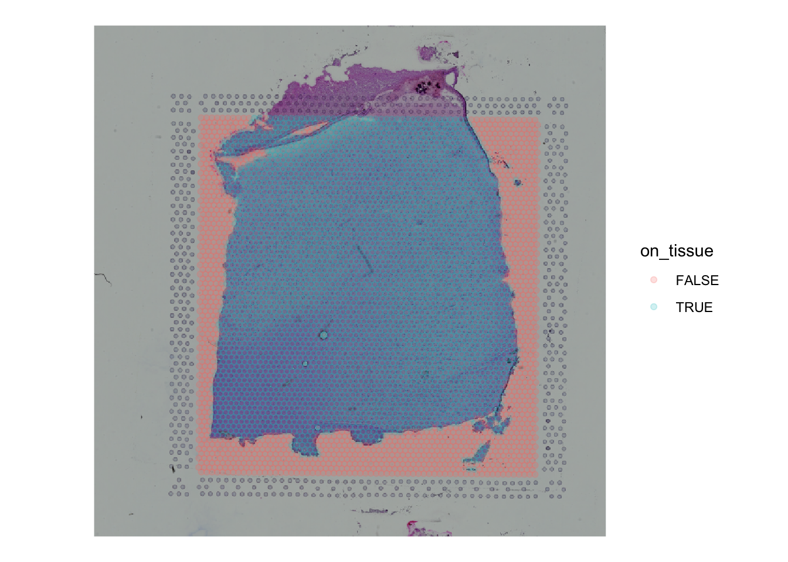
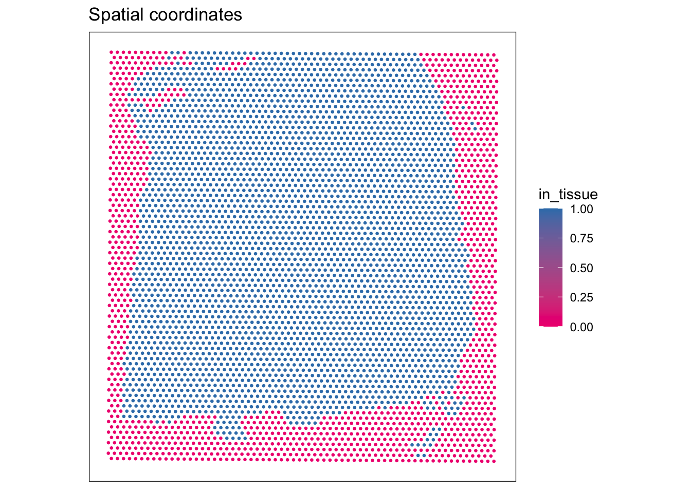

Chapter 1 Practical session 1
In this practical session you will familiarise yourself with some example spatial transcriptomics (STx) data and the common features of such data.
1.1 About this documentation
This handbook is designed to walk you through the practical elements of today’s tutorial. All of the code you need to accomplish the basic tasks thoughout the day is presented in full, there are some ‘stretch goals’ in some of the tutorials where only a template is provided. This is not a typing tutorial, so feel free to copy and paste where necessary. The tutorials are written in rmarkdown and presented on bookdown.org.
1.2 Posit Cloud
You should have received an invite to the Posit Cloud Space for today’s tutorial. Accepting this invite will give you access to the 4 RStudio projects for the 4 sessions we will run today. Each project has the required packages pre-installed, and the data files uploaded. These projects are set up as “Assignments” so that you get your own copy of the workspace.
1.3 Import 10X Visium data
In this tutorial we will be using data from the STexampleData package that contains a small collection of STx datasets from different technologies, including SlideSeq V2, seqFISH and 10x Genomics Visium. These datasets are provided in the SpatialExperiment format - described below.
The specific dataset used for this tutorial is a single sample from the dorsolateral prefrontal cortex (DLPFC) - a 10x Genomics Visium dataset that was published by Maynard et al. (2021).
Here, we show how to load the data from the STexampleData package.
1.4 Explore data types
There is a long history of encapsulating expression data in S3 and S4 objects in R, going back to the ExpressionSet class in Biobase which was designed to store a matrix of microarray data alongside associated experimental metadata. This concept of storing all the relevant data and metadata in a single object has persisted through the development of RNA-Seq analysis (e.g. SummarizedExperiment) and into the age of single-cell transcriptomics (e.g. SingleCellExperiment - see below).
1.4.1 SpatialExperiment class
For the first part of this tutorial (practical sessions 1 and 2), we will be using the SpatialExperiment S4 class from Bioconductor as the main data structure for storing and manipulating datasets.
SpatialExperiment is a specialized object class that supports the storing of spatially-resolved transcriptomics datasets within the Bioconductor framework. It builds on the SingleCellExperiment class (Amezquita et al. 2020) for single-cell RNA sequencing data, which itself extends the RangedSummarizedExperiment class. More specifically, SpatialExperiment has extra customisations to store spatial information (i.e., spatial coordinates and images).
An overview of the SpatialExperiment object structure is is presented in 1.1. In brief, the SpatialExperiment object consists of the below five parts:
assays: gene expression counts
rowData: information about features, usually genes
colData: information on spots (non-spatial and spatial metadata)
spatialCoords: spatial coordinates
imgData: image data
NOTE: For spot-based STx data (i.e., 10x Genomics Visium), a single assay named counts is used.
Figure 1.1: Overview of the SpatialExperiment object class structure.
For more details, see the related publication from Righelli et al., 2021 describing the SpatialExperiment (Righelli et al. 2022).
1.4.2 Inspect the object
## class: SpatialExperiment
## dim: 33538 4992
## metadata(0):
## assays(1): counts
## rownames(33538): ENSG00000243485 ENSG00000237613 ... ENSG00000277475
## ENSG00000268674
## rowData names(3): gene_id gene_name feature_type
## colnames(4992): AAACAACGAATAGTTC-1 AAACAAGTATCTCCCA-1 ...
## TTGTTTGTATTACACG-1 TTGTTTGTGTAAATTC-1
## colData names(7): barcode_id sample_id ... ground_truth cell_count
## reducedDimNames(0):
## mainExpName: NULL
## altExpNames(0):
## spatialCoords names(2) : pxl_col_in_fullres pxl_row_in_fullres
## imgData names(4): sample_id image_id data scaleFactor## [1] 33538 4992## [1] "counts"1.4.3 Counts table and gene metadata
## 6 x 4 sparse Matrix of class "dgTMatrix"
## AAACAACGAATAGTTC-1 AAACAAGTATCTCCCA-1 AAACAATCTACTAGCA-1
## ENSG00000243485 . . .
## ENSG00000237613 . . .
## ENSG00000186092 . . .
## ENSG00000238009 . . .
## ENSG00000239945 . . .
## ENSG00000239906 . . .
## AAACACCAATAACTGC-1
## ENSG00000243485 .
## ENSG00000237613 .
## ENSG00000186092 .
## ENSG00000238009 .
## ENSG00000239945 .
## ENSG00000239906 .As we can see here the counts table is an object of class dgTMatrix which is a sparse matrix. This is because much like scRNA-seq data, STx data include many zeros. As a result, to make the counts table as light as possible we resort to using sparse matrices. This next code chunk examines a part of the matrix that includes genes with some level of expression:
## 21 x 11 sparse Matrix of class "dgTMatrix"
##
## ENSG00000223764 . . . . . . . . . . .
## ENSG00000187634 . . . . . . . . . . .
## ENSG00000188976 . . 2 . . . . . . 1 1
## ENSG00000187961 . . . . . . . . . . .
## ENSG00000187583 . . . . . . . . . . .
## ENSG00000187642 . . . . . . . . . . .
## ENSG00000272512 . . . . . . . . . . .
## ENSG00000188290 1 . . . . . . . . 2 .
## ENSG00000187608 . 1 . . . . 2 . . 1 .
## ENSG00000224969 . . . . . . . . . . .
## ENSG00000188157 . 1 . . 2 . . . . 1 .
## ENSG00000273443 . . . . . . . . . . .
## ENSG00000237330 . . . . . . . . . . .
## ENSG00000131591 . . . . . . . . . 1 .
## ENSG00000223823 . . . . . . . . . . .
## ENSG00000272141 . . . . . . . . . . .
## ENSG00000205231 . . . . . . . . . . .
## ENSG00000162571 . . . . . . . . . . .
## ENSG00000186891 . . . 1 . . . . . . .
## ENSG00000186827 . . . . . . . . . . .
## ENSG00000078808 . 1 2 . 1 . . . . 1 .## 21 x 11 sparse Matrix of class "dgTMatrix"
##
## ENSG00000160294 . . . . . . . . . . .
## ENSG00000228137 . . . . . . . . . . .
## ENSG00000239415 . . . . . . . . . . .
## ENSG00000182362 . . . . . . . . 1 . .
## ENSG00000160298 . . . . . . . . . . .
## ENSG00000160299 . . 1 . 1 . . . . . .
## ENSG00000160305 . . . . . 2 . . . . .
## ENSG00000160307 1 3 1 1 4 5 1 1 . 2 1
## ENSG00000160310 . . . . 1 . . . . 2 .
## ENSG00000198888 17 44 71 16 154 97 12 14 32 167 6
## ENSG00000198763 16 59 64 11 116 63 11 12 18 123 6
## ENSG00000198804 37 85 155 25 252 176 24 27 38 335 12
## ENSG00000198712 23 79 120 23 214 170 22 25 48 242 10
## ENSG00000228253 2 . 3 . 1 . . 1 1 6 .
## ENSG00000198899 20 39 93 9 136 108 20 18 25 165 7
## ENSG00000198938 27 59 133 20 216 120 22 26 43 232 9
## ENSG00000198840 5 27 33 5 71 39 8 11 12 78 .
## ENSG00000212907 2 . 4 2 7 5 . 1 1 9 .
## ENSG00000198886 15 65 95 9 183 98 18 19 33 178 7
## ENSG00000198786 2 10 10 3 20 14 1 2 2 25 4
## ENSG00000198695 1 1 3 . 2 2 . . . 1 .The levels of expression of different genes in the same spots differ significantly with many low values being present. We have to remember here that this data is not as yet normalized, and is therefore affected by systematic factors such as library size. Nonetheless, what is demonstrated here is typical for STx data (as it is for scRNA-seq data) - many genes will show low expression in individual spots.
To continue our exploration of the information stored in the SpatialExperiment object:
## DataFrame with 6 rows and 3 columns
## gene_id gene_name feature_type
## <character> <character> <character>
## ENSG00000243485 ENSG00000243485 MIR1302-2HG Gene Expression
## ENSG00000237613 ENSG00000237613 FAM138A Gene Expression
## ENSG00000186092 ENSG00000186092 OR4F5 Gene Expression
## ENSG00000238009 ENSG00000238009 AL627309.1 Gene Expression
## ENSG00000239945 ENSG00000239945 AL627309.3 Gene Expression
## ENSG00000239906 ENSG00000239906 AL627309.2 Gene Expression1.4.4 Coordinates table and spot metadata
The data that distinguished a SpatialExperiment object is the coordinate data which describes the spatial location of each spot.
## pxl_col_in_fullres pxl_row_in_fullres
## AAACAACGAATAGTTC-1 3913 2435
## AAACAAGTATCTCCCA-1 9791 8468
## AAACAATCTACTAGCA-1 5769 2807
## AAACACCAATAACTGC-1 4068 9505
## AAACAGAGCGACTCCT-1 9271 4151
## AAACAGCTTTCAGAAG-1 3393 7583## DataFrame with 6 rows and 7 columns
## barcode_id sample_id in_tissue array_row
## <character> <character> <integer> <integer>
## AAACAACGAATAGTTC-1 AAACAACGAATAGTTC-1 sample_151673 0 0
## AAACAAGTATCTCCCA-1 AAACAAGTATCTCCCA-1 sample_151673 1 50
## AAACAATCTACTAGCA-1 AAACAATCTACTAGCA-1 sample_151673 1 3
## AAACACCAATAACTGC-1 AAACACCAATAACTGC-1 sample_151673 1 59
## AAACAGAGCGACTCCT-1 AAACAGAGCGACTCCT-1 sample_151673 1 14
## AAACAGCTTTCAGAAG-1 AAACAGCTTTCAGAAG-1 sample_151673 1 43
## array_col ground_truth cell_count
## <integer> <character> <integer>
## AAACAACGAATAGTTC-1 16 NA NA
## AAACAAGTATCTCCCA-1 102 Layer3 6
## AAACAATCTACTAGCA-1 43 Layer1 16
## AAACACCAATAACTGC-1 19 WM 5
## AAACAGAGCGACTCCT-1 94 Layer3 2
## AAACAGCTTTCAGAAG-1 9 Layer5 41.4.5 Image metadata
Finally, the SpatialExperiment object also contains the image data from the STx experiment, giving the coordinates we looked at in the previous section some context in terms of the tissue of origin.
## DataFrame with 2 rows and 4 columns
## sample_id image_id data scaleFactor
## <character> <character> <list> <numeric>
## 1 sample_151673 lowres #### 0.0450045
## 2 sample_151673 hires #### 0.1500150As well as this (fairly basic) metadata, the spe object also contains the image itself, which the SpatialExperiment class allows us to access, like so:

We can also use the scaling factors in the imgData to plot the locations of the Visium spots over the image. The position of a point in an image does not map directly to the spot location in cartesian coordinates, as it is the top-left of an image that is (0,0), not the bottom-left. In order to manage this, we need to transform the y-axis coordinates.
## "Plot" the image
plot(imgRaster(spi))
## Extract the spot locations
spot_coords <- spatialCoords(spe) %>% as.data.frame
## Scale by low-res factor
lowres_scale <- imgData(spe)[imgData(spe)$image_id == 'lowres', 'scaleFactor']
spot_coords$x_axis <- spot_coords$pxl_col_in_fullres * lowres_scale
spot_coords$y_axis <- spot_coords$pxl_row_in_fullres * lowres_scale
## lowres image is 600x600 pixels
dim(imgRaster(spi))## [1] 600 600## flip the Y axis
spot_coords$y_axis <- abs(spot_coords$y_axis - (ncol(imgRaster(spi)) + 1))
points(x=spot_coords$x_axis, y=spot_coords$y_axis)
An equivalent plot, using ggplot2 as the plotting library:
ggplot(mapping = aes(1:600, 1:600)) +
annotation_raster(imgRaster(spi), xmin = 1, xmax = 600, ymin = 1, ymax = 600) +
geom_point(data=spot_coords, aes(x=x_axis, y=y_axis), alpha=0.2) + xlim(1, 600) + ylim(1, 600) +
coord_fixed() +
theme_void()
We can also extract additional metadata to make these plots more informative - for instance, the annotation from colData that flags whether a spot is “on tissue” or not can be used to colour the spots like so:
## Add the annotation to the coordinate data frame
spot_coords$on_tissue <- as.logical(colData(spe)$in_tissue)
ggplot(mapping = aes(1:600, 1:600)) +
annotation_raster(imgRaster(spi), xmin = 1, xmax = 600, ymin = 1, ymax = 600) +
geom_point(data=spot_coords, aes(x=x_axis, y=y_axis, colour=on_tissue), alpha=0.2) + xlim(1, 600) + ylim(1, 600) +
coord_fixed() +
theme_void()
Having to manually extract the relevant information from the SpatialExperiment object to generate plots like this does not generally make sense, and defies the point of using a data class that can encapsulate this information. We can instead use a package like ggspavis, which is explicitly built for generating visualisations of STx data directly from the SpatialExperiment object. We will make extensive use of this package during the next tutorial as we work through quality control processes for STx data. The pre-built nature of these plots is convenient, though it prevents users from achieving tasks like adding the tissue image to the plot. For many users the convenience will outweigh any issues this presents, though it is worth being aware of how to build visualisations from the ground up.
